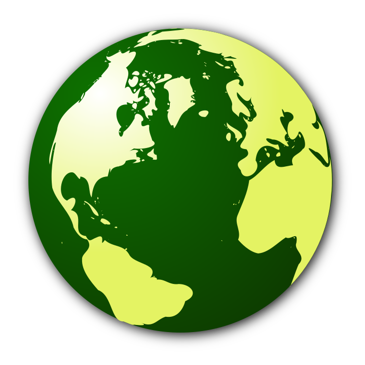

Alterações no QGIS 2.10¶
Este é o registro de alterações para a próxima versão do QGIS - versão 2.10.0 ‘Pisa’ - cidade anfitriã para o nosso desenvolvimento em Março de 2010.
Última versão
Este é o próximo lançamento em nossa série de liberação quadrimestral. Dá-lhe acesso antecipado aos novos recursos que temos trabalhado e representa a “vanguarda” do desenvolvimento QGIS. Se você estiver trabalhando em um ambiente de produção onde você quiser ser mais conservador com relação a implementação de novas funcionalidades para seus usuários, nós também fornecemos uma versão de longa duração (LTR) do QGIS. A versão LTR atual é 2.8.2 e está disponível em download.qgis.org. lançamentos LTR dispõe de correções de bugs e são suportadas por um ano, sem adição de novos recursos, apenas correções de bugs e atualizações triviais). Os recursos fornecidos no QGIS 2.10 ‘Pisa’ serão incluídos na próxima versão LTR (prevista para ser lançado em 2016), então o uso desta versão oferece-lhe uma excelente oportunidade para testar novas funcionalidades que irão tornar o seu caminho para a próxima LTR.
Novos recursos no QGIS 2.10 ‘Pisa’
O QGIS 2.10.0 inclui muitos novos recursos, ajustes e melhorias para tornar o mais popular SIG Desktop grátis ainda mais útil e com mais recursos. Sempre que novos recursos são adicionados ao software, também introduzem a possibilidade de novos bugs - se você encontrar quaisquer problemas com esta versão, envie um ticket por meio do Rastreador de Bugs do QGIS.
Agradecimentos
Gostaríamos de agradecer aos desenvolvedores, testadores e documentadores, todas as pessoas lá fora que oferecem seu tempo e esforço.
From the QGIS community we hope you enjoy this release! If you wish to donate time, money or otherwise get involved in making QGIS more awesome, please wander along to qgis.org and lend a hand!
Finalmente, gostaríamos de agradecer aos nossos patrocinadores oficiais pelo apoio financeiro de valor inestimável que prestam a este projeto:
- Patrocinador OURO: Asia Air Survey, Japan,
- Patrocinador de PRATA: Sourcepole AG, Suíça
- Patrocinador de PRATA: Estado de Vorarlberg , Áustria
- Patrocinador PRATA: Office of Public Works, Ireland, Ireland
- SILVER Sponsor: AGH Universidade de Ciencia e Tecnologia, Polonia
- Patrocinador BRONZE: www.molitec.it, Italy
- Patrocinador BRONZE: www.argusoft.de, Alemanha
- Patrocinador BRONZE: www.openrunner.com, France
- Patrocinadores BRONZE: `GKG Kassel,(Dr.-Ing. Claas Leiner), Alemanha<http://www.gkg-kassel.de/>`__
- Patrocinador BRONZE: Customer Analytics, Estados Unidos
- Patrocinador BRONZE: Urbsol, Australia
- Patrocinador BRONZEr: MappingGIS, Espanha
- Patrocinador BRONZE: Lutra Consulting, UK
- Patrocinador BRONZE: ADLARES GmbH, Alemanha
- Patrocinador BRONZE: Avioportolano Italia, Itália
- Patrocinador BRONZE: GeoSynergy, Australia
- Patrocinador BRONZE: Gaia3D, Coréia do Sul
- Patrocinador BRONZE: Royal Borough of Windsor and Maidenhead, Reino Unido
- Patrocinador BRONZE: Chartwell Consultants Ltd, Canadá
- Patrocinador BRONZE: Trage Wegen vzw, Belgium
- Patrocinador BRONZE: GIS-Support, Poland
- Patrocinador BRONZE: GIS3W, Itália
- Patrocinador BRONZE: GFI - Gesellschaft fr Informations technologie mbH, Alemanha
- Patrocinador BRONZE: Faculty of Geology, Geophysics and Environmental Protection, AGH, University of Science and Technology, Poland
A current list of donors who have made financial contributions large and small to the project can be seen on our donors list. If you would like to become and official project sponsor, please visit our sponsorship page for details. Sponsoring QGIS helps us to fund our six monthly developer meetings, maintain project infrastructure and fund bug fixing efforts.
O QGIS é um software livre e você não está sob nenhuma obrigação de pagar nada pelo seu uso - na verdade queremos encorajar as pessoas a usa-lo, independentemente da sua situação financeira ou social - acreditamos que capacitar as pessoas na utilização de ferramentas de tomadas de decisão espacial irá resultar em uma sociedade melhor para toda humanidade
- Geral
- Ferramentas de análise
- Navegador
- Provedores de Dados
- Gestão de dados
- Diagramas
- Digitalização
- Rotulação
- Compositor de Mapas
- Programabilidade
- Servidor QGIS
- Simbologia
- Funcionalidade: Combina categorias com estilos existentes
- Funcionalidade: Variação do tamanho do símbolo utilizando renderização graduada
- Recurso: Nova opção para impedir o recorte automático de recursos para a extensão do mapa
- Recurso: a escala e a rotação do tamanho foram removidas do menu avançado
- Recurso: Propriedades definidas pelos dados para marcador de fonte
- Funcionalidade: Visualize e modifique o renderizador graduado usando um histograma
- Funcionalidade: Expressões de tamanho, rotação e largura do traço no nível do symbollist
- Funcionalidade: Efeitos da camada ao vivo para camadas e camadas de símbolos
Geral¶
Funcionalidade: Junção por parâmetros podem agora ser editados¶
Agora é possível editar junção parâmetros (como inserir prefixo ou colunas para se juntar) após uma junção criada. Antes dessa mudança era preciso apagar e recriar para juntar ao todo.

Funcionalidade: Camadas com associações podem agora ser filtradas¶
Antes da versão 2.10 uma camada não podia ser filtrada se tivesse pelo menos uma junção. Agora é possível, mas apenas usando colunas da tabela original.

Funcionalidade: Melhorias gerais¶
Assim como os numerosos itens listados abaixo, as seguintes melhorias foram realizadas:
- Suporte para camadas de nuvens de pontos em PostGIS
- Barras de ícones e ícones em widgets acoplados foram melhoradas para ocupar menos espaço na tela e para melhorar a aparência OSX
- Melhorias para o plugin GRASS
- Suporte para scripts não-latinos para rótulos curvos
- Calculadora raster melhorada e mais robusta e ferramentas do georeferencidador
- Melhoria da interface do usuário e fluxo de trabalho para as janela de propriedades de rótulagem de dados

Funcionalidade: Melhoria no tratamento das substituições de arquivos do projeto¶
O QGIS 2.10 não irá avisá-lo ao tentar salvar o seu projeto se dados desde a última modificação de um projeto carregado mudou. Isso é útil se mais de um usuário ou sessão tem o mesmo arquivo de projeto aberto e estão ambos a tentar salvar as edições no arquivo de projeto.
Este recurso foi desenvolvido por: Jürgen Fischer (norBIT)

Funcionalidade: Novo motor de geometria¶
O QGIS 2.10 tem um novo motor de geometria. Em geral, você não verá muitas diferenças na interface do usuário ainda, mas esta é a base para um conjunto muito mais rico de capacidades geoespaciais que seremos capazes de suportar no futuro. A nova implementação suporta tipos de geometria curva (assim, por exemplo, você pode representar uma feição como um círculo em vez de um polígono segmentado feito para exibir um círculo) e tem suporte para valores z/m em geometrias. Para usar curvas no QGIS você vai precisar usar PostGIS ou um armazenamento de dados semelhante que é capaz de expressar geometrias curvilíneas. Se você quiser ter uma previsão você pode tentar um exercício simples como este em seu banco de dados PostGIS
-- Table: curves DROP TABLE curves;
CREATE TABLE curves (
id bigserial NOT NULL,
geometry geometry(CURVEPOLYGON, 4326),
name text,
CONSTRAINT p_key PRIMARY KEY (id)
);
INSERT INTO curves VALUES ( 1, st_geomfromtext(
'CURVEPOLYGON(CIRCULARSTRING(1 1,1 2, 2 2, 2 1, 1 1))', 4326), 'test');
Em seguida, adicione a camada curvas ao seu projeto.
Este recurso foi desenvolvido por: Marco Hugentobler (Sourcepole AG)
Este recurso foi financiado por: KantonSolothurn, Suiça

Ferramentas de análise¶
Funcionalidade: Novo Widget com resumo estatístico¶
Pode exibir estatísticas de resumo (por exemplo, média, desvio padrão, …) para um campo ou expressão de uma camada vetorial ou seleção. Este é fornecido por meio de um novo painel que você pode ativar no menu``Visualização -> Painéis -> Estatísticas``. Por favor, note que você só vai ser capaz de gerar estatísticas sobre camadas vetoriais que têm uma coluna numérica.

Funcionalidade: Use as funções logarítmicas na calculadora raster¶
A calculadora raster (no menu Raster -> Calculadora raster do QGIS) é uma ferramenta que permite que você execute operações da matriz em uma ou mais camadas de varredura. Com o QGIS 2.10 agora você pode usar funções LN e `` LOG10`` na calculadora raster.

Funcionalidade: Novos recursos de estatísticas zonais¶
Estatísticas zonais fornecem uma maneira de extrair valores agregados para os pixels subjacentes de um polígono. Os seguintes novos recursos foram adicionados à nossa ferramenta de estatística zonal:
- você agora pode selecionar quais estatísticas calcular.
- Estatísticas extras foram adicionadas (mediana, min, max, gama, minoria, maioria e variedade)
- capacidade de selecionar a banda raster a ser usado para extração de estatísticas
As estatísticas zonais são um ‘complemento core’ (um complemento que vem com o seu instalador QGIS), mas está desativado por padrão. Você precisa habilitá-lo no gerenciador de complementos e, em seguida, uma entrada de menu para as estatísticas de zona aparecerá no menu Raster.

Navegador¶
Funcionalidade: Novo navegador de propriedades do widget¶
Ao usar os painéis do QGIS (Exibir->Painéis->Navegador), agora é possível que as propriedades de um widget na parte inferior da árvore do sistema de arquivos. Qualquer fonte de dados que você clicar terão suas propriedades mostradas neste painel. Isto torna mais rápido e conveniente para ver informações básicas sobre o conjunto de dados que você selecionou. Para alternar as propriedades de exibição, você deve usar o `` ícone i`` na parte superior do painel do navegador.

Funcionalidade: Novo ícone do navegador¶
O navegador QGIS é um aplicativo separado, autônomo que permite navegar e visualizar os conjuntos de dados disponíveis para você (a partir do seu sistema de arquivos, conexões de banco de dados, conexões de serviço web etc.) Nas versões anteriores do QGIS foi utilizado um ícone muito semelhante ao QGIS em si, que tem sido a fonte de confusão para muitos usuários. A fim de reduzir a probabilidade de abrir a aplicação errada, nós criamos um novo ícone para navegador do QGIS.

Provedores de Dados¶
Funcionalidade: Melhorias no exportador DXF¶
A exportação DXF foi melhorada continuamente nas últimas três versões do QGIS. Esta versão introduz uma SVG melhorada ou marcador simples de conversão bloco DXF, corrige alguns bugs e problemas que resultaram em arquivos DXF ilegíveis. Na imagem você pode ver a exibição original no QGIS à esquerda e à prestação do arquivo DXF exportado no Autodesk TrueView do lado direito.
Veja também esse artigo no qgis.ch explicando o que é suportado e o que não é.
Este recurso foi desenvolvido por: Jürgen Fischer (norBIT)
Este recurso foi financiado por: Communities of Morges, Uster, Vevey e SIGE
Funcionalidade: provedor de filtros PostGIS de expressões laterais¶
No QGIS 2.10 agora é possível filtrar recursos no lado do servidor de banco de dados. Apenas expressões suportados serão enviadas para o banco de dados. Expressões usando operadores ou funções não suportadas vai para a avaliação local.
Para fazer uso deste recurso, é necessário ativá-lo em Configurações-> Opções -> fontes de dados . Se a sua expressão de filtro é compatível com PostgreSQL, ele será automaticamente executado no lado do servidor. Você também pode fazer uso deste recurso quando usando a API do Python, por exemplo, ao usar estas chamadas.
QgsFeatureRequest().setFilterExpression( expression )
ou
QgsVectorLayer::getFeatures( expression )

Gestão de dados¶
Funcionalidade: campos virtuais não são atualizáveis¶
Antes da versão 2.8 você tinha que apagar e recriar campos virtuais se você queria mudar a expressão para calcular o campo virtual. No QGIS 2.10, agora você pode ir para a guia campos e pressionar o botão Expressção para abrir o editor de expressão e atualizar a expressão usada para o campo virtual.
Esta funcionalidade foi desenvolvida por: Matthias Kuhn (OpenGIS)
Esta funcionalidade foi desenvolvida por: City of Uster, Switzerland

Funcionalidade: editor de linha com autocomplete de valores do widget de edição¶
O Widget de edição de valores para camadas vetoriais ( Layer -> Propriedades -> Campos -> Editar -> Valor de relação) agora pode ser definido como autocompletar, quando você começar a digitar na caixa de entrada do formulário ele cria uma sugestão.

Funcionalidade: Melhorias para o gerenciador de BD¶
Há dois novos recursos no gerenciador de BD:
Consulta por camada não precisa mais de uma coluna inteira exclusiva
Uma coluna com número inteiro único não é mais necessário para carregar uma consulta SQL em uma camada no QGIS. Um valor incrementado-magnético vai ser utilizado no seu lugar.
Integração de um construtor de consulta SQL
Uma nova janela no gerenciador BD ajuda na criação de consultas SQL por meio de widgets, onde os nomes de tabela, nomes e funções de colunas podem ser selecionados pelo usuário. Ele foi transportado do plugin SpatiaLite e trabalha por PostGIS e prestadores SpatiaLite.
Esses recursos foram financiados por: MEDDE (Ministério do Desenvolvimento Sustentável francês)
Esses recursos foram desenvolvidos por: Hugo Mercier / Oslandia

Funcionalidade: Filtro de encadeamento relativo para o widget de referência¶
Para selecionar entradas vinculadas de outras tabelas, pode-se usar os widgets de referência de relação. É possível selecionar elementos graficamente, selecionando-os no mapa, se o recurso vinculado tiver uma geometria anexada ou escolher um elemento pelo ID vinculado. Para facilitar a seleção não espacial, agora é possível restringir as opções disponíveis com filtros (encadeados ou desencadeados). Se os filtros forem desencadeados, suas opções serão combinadas com “AND” para definir as opções disponíveis. Se encadeada estiver marcada, um modo de busca detalhada dos filtros será ativado, de modo que cada filtro mostre apenas as entradas que correspondem ao filtro anterior. Isso é útil para selecionar dados hierárquicos como Cidade -> Rua -> Número.
Esta funcionalidade foi desenvolvida por: Matthias Kuhn (OpenGIS)
Este recurso foi financiado por: SIGE

Diagramas¶
Funcionalidade: Melhorias nos diagramas¶
A funcionalidade diagrama no QGIS permite sobrepor pequenos gráficos circulares ou histogramas sobre as feições do mapa. Nesta versão fizemos as seguintes melhorias para suporte diagramação:
- Diagramas podem ser desativados sem perder as configurações.
- Adicionar caixa de seleção para sempre mostrar diagramas para uma camada
- A interface de usuário dos diagramas foi atualizada para simplificar o diálogo e torná-lo mais amigável
- Classes dos diagramas agora são mostradas na legenda das camadas

Digitalização¶
Funcionalidade: Melhoria da ferramenta de rotação geometria¶
A ferramenta de rotação de geometria é uma ferramenta de digitalização avançada que permite que você gire arbitrariamente feições geométricas. As seguintes melhorias foram feitas para a ferramenta de rotação:
- agora você pode usar entrada numérica em rotação ferramenta de mapa
- você pode usar uma caixa de combinação para definir os ângulos
- foi adicionado suporte para o encaixe em ângulos (ativado diretamente quando
usarshift + click``) - âncora de rotação é definido em `` CTRL + click`` e não no movimento do mouse

Rotulação¶
Funcionalidade: “Follow point” alinhamento para os rótulos multilinha¶
Quando definido para este modo, o alinhamento de texto para rótulos depende do posicionamento final do rótulo em relação ao ponto. Por exemplo, se o rótulo for colocado à esquerda do ponto, o rótulo será alinhado à direita e, se for colocado à direita do ponto, o rótulo será alinhado à esquerda. Isso melhora muito a aparência de rótulos multilinhas para camadas pontuais.

Compositor de Mapas¶
Funcionalidade: Adicione o modo de dimensionamento da barra de escala para ajustar-se a uma largura de barra de escala desejada¶
Nas versões anteriores do QGIS, era difícil usar barras de escala gráficas quando o alcance das escalas potenciais era grande. A barra de escala seria ou muito rápida ou muito estreita e era preciso adaptar manualmente os tamanhos dos segmentos (unidades por segmento) após cada alteração de escala. Isso também significava que as barras de escala gráficas não poderiam ser realmente usadas na impressão serial Atlas ou com o QGISserver quando a escala final do mapa era desconhecida. Com o QGIS2.10, agora é possível definir tamanhos mínimo / máximo para um comprimento de segmento em mm, e o QGIS poderia adaptar automaticamente as unidades por segmento, mantendo os valores redondos.
Não se esqueça de também estabelecer o alinhamento da barra de escala, esp. se você quer que ele seja centrado ou alinhado à direita!
Este recurso foi desenvolvido por: Sandro Mani (Sourcepole AG)
Este recurso foi financiado por: Kanton Glarus, Suiça

Programabilidade¶
Funcionalidade: Melhorias para programadores¶
Realizamos uma série de mudanças e melhorias que serão de interesse a desenvolvedores:
- Aumentamos o requisito mínimo para o Qt4 para a versão 4.8. O Qt4 é um dos principais kits de ferramentas / bibliotecas C ++ que usamos para criar o QGIS.
- Nova classe `` Resumos estatísticos do Qgs`` para calcular estatísticas de uma lista de números.
- Permite a mudança da fonte de dados da camada vetor.
- Compartilhamento implícito de classes: `` Qgs Campo``, `` QgsFields``, `` QgsDataDefined``, `` QgsF Recurso``, `` Qgs Geometria``.
- Os plugins agora podem criar suas próprias entradas no elemento do navegador com duas novas classes: `` Qgis DataItem Provider`` e `` Qgs DataItem ProviderRegistry``.

Servidor QGIS¶
Recurso: Suporte para o parâmetro de tolerância em solicitações do WMS GetFeatureInfo¶
Ao usar as camadas WMS atendidas pelo QGIS Server, você pode especificar a tolerância de quanto os pedidos GetFeatureInfo de origem de clique devem ser considerados. Isso é importante para dispositivos móveis, onde é mais difícil apontar exatamente para os recursos. Antes desse novo recurso, era praticamente impossível identificar recursos de ponto ou linha em um dispositivo móvel com o servidor QGIS. Você pode adicionar os seguintes parâmetros aos seus pedidos GetFeatureInfo:
FI_POINT_TOLERANCE=16&FI_LINE_TOLERANCE=8&FI_POLYGON_TOLERANCE=4
e mudar os valores de tolerância (em pixels) para atender às suas necessidades.
Este recurso foi desenvolvido por: Marco Hugentobler (Sourcepole AG)
Esta funcionalidade foi desenvolvida por: City of Uster, Switzerland

Simbologia¶
Funcionalidade: Combina categorias com estilos existentes¶
Adicione opções no menu avançado do renderizador categorizado para definir categorias para símbolos com um nome correspondente da biblioteca de estilos ou um arquivo de estilo XML.

Funcionalidade: Variação do tamanho do símbolo utilizando renderização graduada¶
Os renderizadores são o subsistema do QGIS que permite criar representações cartográficas ricas de seus dados. Um renderizador graduado varia a simbologia com base em um valor que muda continuamente em uma camada vetorial. Nas versões anteriores do QGIS, você só podia variar a cor (por exemplo, usando uma cor ao longo de uma rampa de cores). No QGIS 2.10, o renderizador de símbolo graduado agora permite que você varie o tamanho * ou * a cor. Para camadas de pontos, você pode variar o tamanho do ponto, para linhas você pode variar a largura da linha. As camadas de polígonos retêm apenas a capacidade de variar por cor, mas a largura da linha ainda não é suportada.
Esta funcionalidade foi desenvolvida por: Vincent Mora (Oslandia)
Esta funcionalidade foi fundada por: Agence de l’eau Adour-Garonne

Recurso: Nova opção para impedir o recorte automático de recursos para a extensão do mapa¶
Esta opção (localizada sob o menu avançado do símbolo) desativa o recorte automático de linhas / polígonos na extensão da tela. Em alguns casos, esse recorte resulta em simbologia desfavorável (por exemplo, o centróide é preenchido onde o centróide deve sempre ser o centróide do recurso real).

Recurso: a escala e a rotação do tamanho foram removidas do menu avançado¶
Nós removemos `` SizeScale`` e `` Rotation`` da opção `` Layer -> Properties -> Symbology -> Advanced Menu`. Você deve preferir definir a rotação em uma * base de camada por símbolo * usando uma expressão ou campo. As expressões usadas em projetos antigos são convertidas em propriedades ** de tamanho e ângulo definidos por nível de símbolo **.
Esta funcionalidade foi desenvolvida por: Vincent Mora (Oslandia)
Esta funcionalidade foi fundada por: Agence de l’eau Adour-Garonne

Recurso: Propriedades definidas pelos dados para marcador de fonte¶
A maioria das propriedades do marcador de fonte pode agora ser definida por dados, incluindo tamanho do marcador, rotação e caractere.

Funcionalidade: Visualize e modifique o renderizador graduado usando um histograma¶
Uma nova guia de histograma foi adicionada ao renderizador graduado, que mostra um histograma interativo dos valores do campo ou da expressão designada. Quebras de classe podem ser movidas ou adicionadas usando o histograma.
Esta funcionalidade foi fundada por: ADUGA
Este recurso foi desenvolvido por: Nyall Dawson

Funcionalidade: Expressões de tamanho, rotação e largura do traço no nível do symbollist¶
Tamanho e Rotação podem ser definidos por uma expressão para todos os níveis de símbolos que compõem um marcador. Largura pode ser definida por uma expressão para todos os símbolos que compõem uma linha.
Para símbolos, uma legenda é gerada para tamanhos variados. Isso permite uma legenda de análise multivariada no caso de cores classificadas / graduadas.
Um assistente, com pré-visualização, é acessível através do botão de dados definidos para ajudar o usuário a definir a expressão de tamanho. Três métodos estão disponíveis: Flannery, Area e Radius.
Esta funcionalidade foi desenvolvida por: Vincent Mora (Oslandia)
Esta funcionalidade foi fundada por: Agence de l’eau Adour-Garonne

Funcionalidade: Efeitos da camada ao vivo para camadas e camadas de símbolos¶
Os efeitos da camada ao vivo aumentam os já extensos recursos cartográficos do QGIS, adicionando a capacidade de adicionar vários efeitos de renderização à cadeia de renderização. Com os efeitos ao vivo, você pode fazer coisas como colocar sombras sob o seu símbolo, inclinando e cortando o símbolo renderizado. Você também pode sobrepor esses efeitos um sobre o outro e definir se o efeito deve ser progressivo (ou seja, aplicar-se ao estado renderizado até o momento) ou discreto (reinjetando novamente a geometria de origem na cadeia de renderização).
** Nota **: Esta é uma funcionalidade para usuários avançados e devemos observar que o uso excessivo desse recurso pode diminuir significativamente os tempos de renderização, portanto, convém considerar ter diferentes perfis de simbologia para sua camada - um para gerar mapas de qualidade de produção e um para o modo de rascunho.
Este recurso foi desenvolvido por: Nyall Dawson
Esta funcionalidade foi financiada por: um iniciativa de crowd-funding